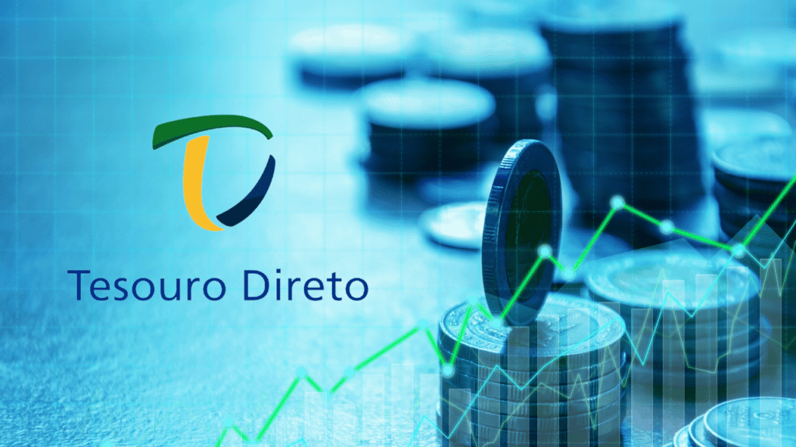

Depois de conhecer os títulos de crédito de bancos (como CDB, LCI e LCA), o próximo passo natural para o investidor de Renda Fixa é o Tesouro Direto.
Ele não é apenas um dos investimentos mais acessíveis do mercado, permitindo aplicações a partir de aproximadamente R$ 30,00, mas é também considerado o investimento mais seguro do país.
Neste artigo, vamos explicar o que são os Títulos Públicos e como eles se encaixam na sua carteira.
O Que é o Tesouro Direto?
O Tesouro Direto é um programa do Tesouro Nacional em parceria com a B3 para a venda de títulos públicos federais para pessoas físicas.
De forma simplificada: ao comprar um título do Tesouro, você está emprestando dinheiro diretamente para o Governo Federal. Esse dinheiro é usado para financiar a dívida pública e projetos do país, como saúde, educação e infraestrutura.

A Segurança Soberana
Muitas pessoas têm receio de emprestar dinheiro ao governo, mas, no mercado financeiro, o governo é considerado o pagador mais seguro que existe. Isso acontece porque ele possui o monopólio da emissão de moeda e a capacidade de arrecadar impostos.
Por isso, dizemos que o Tesouro Direto tem o risco soberano (o menor risco da economia).
Os Três Tipos de Títulos
Os títulos públicos são classificados de acordo com a forma como a rentabilidade é calculada. Entender essa diferença é vital para não perder dinheiro:
- Tesouro Selic (Pós-Fixado): Sua rentabilidade varia conforme a Taxa Selic. É o título ideal para a reserva de emergência, pois tem baixíssimo risco de oscilação e liquidez diária.
- Tesouro Prefixado: A taxa de juros é definida na compra (ex: 11% ao ano). Você sabe exatamente quanto vai receber no vencimento. É ideal quando se acredita que os juros vão cair no futuro.
- Tesouro IPCA+ (Híbrido): Paga uma taxa fixa mais a inflação (IPCA). É o melhor título para garantir que seu dinheiro não perca poder de compra no longo prazo (aposentadoria, faculdade dos filhos).
Tributação e Custos
Diferentemente da LCI e LCA, o Tesouro Direto cobra Imposto de Renda sobre o lucro, seguindo a tabela regressiva:
| Até 180 dias | 22,5% |
| De 181 a 360 dias | 20,0% |
| De 361 a 720 dias | 17,5% |
| Acima de 720 dias | 15,0% |
Além do imposto, existe uma Taxa de Custódia da B3 de 0,20% ao ano sobre o valor total investido (embora o Tesouro Selic seja isento dessa taxa para investimentos de até R$ 10.000,00).
Resumo
- Tesouro Direto é o empréstimo para o Governo Federal.
- É o investimento mais seguro do país (Risco Soberano).
- Tesouro Selic: Para curto prazo e emergências.
- Tesouro IPCA+: Para proteger o patrimônio da inflação no longo prazo.
- Possui cobrança de IR, mas a segurança compensa.